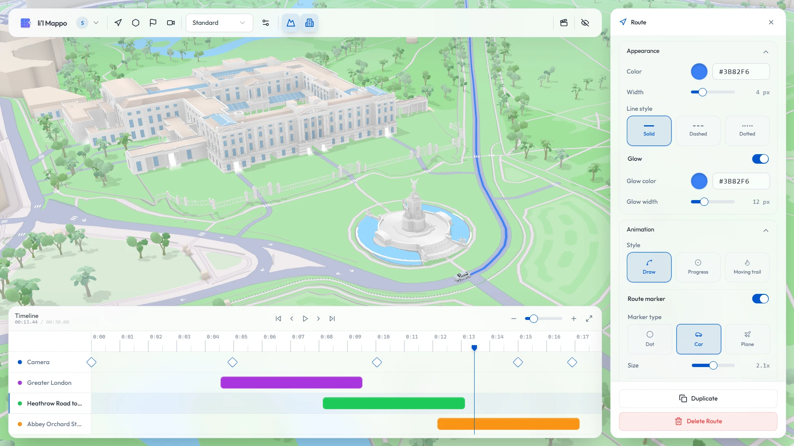

Open Source & Browser-Based
Cinematic map animations.
Zero
subscriptions.
Build timeline-driven travel routes, dynamic boundaries, and 3D callouts directly in your browser. Render locally for free, or bring your own Mapbox key to unlock unlimited potential.
1080p • 60fps
